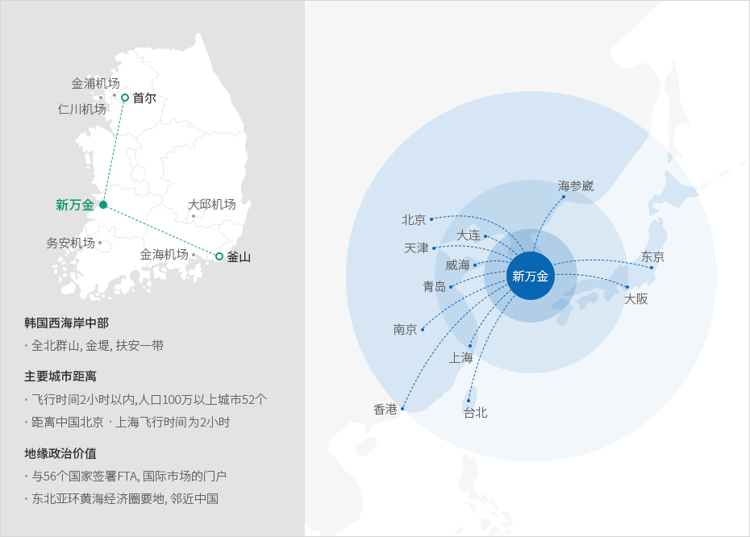
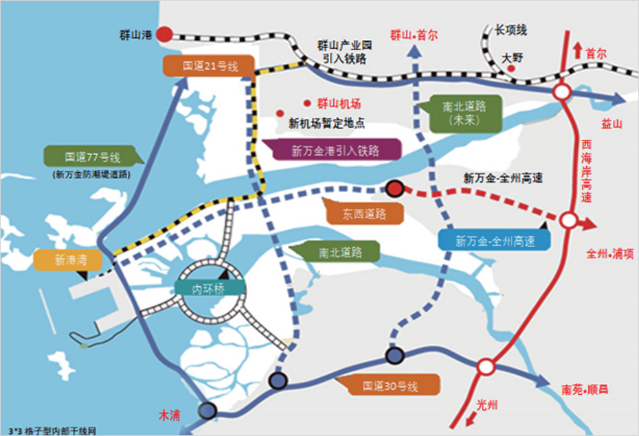

새만금
- Home
- 투자의 시작
- 외국인투자기업 중점유치 지역
- 새만금
산업입지에는 경제자유구역, 외국인투자지역 및 자유무역지역 등의 외국투자가를 지원하기 위한 지역이 있으며, 입지는 임대 또는 분양의 형태로 지원된다. 이러한 지역은 일정 요건 충족 시 입지지원 뿐만 아니라 조세감면이 적용되며 다른 법령에서 제한되는 사항에 대한 예외가 적용되는 경우도 있다.
大力支援新万金未来的城市发展, 构建“低碳环保的绿色大众交通体系＂
新万金的地理位置
大韩民国经济中心, 15亿东北亚圈的经济中心位置


东北亚经济中心
-
韩国西海岸中部
- 全北群山, 金堤, 扶安一带
-
主要城市距离
- 飞行时间2小时以内,人口100万以上城市52个
- 距离中国北京ㆍ上海飞行时间为2小时
-
地缘政治价值
- 与56个国家签署FTA, 国际市场的门户
- 东北亚环黄海经济圈要地, 邻近中国
新万金
- 北京
- 大连
- 天津
- 威海
- 青岛
- 南京
- 上海
- 香港
- 台北
- 海参崴
- 东京
- 大阪

新万金基础设施
构建环保的绿色大众交通体系
-
机场
- 群山机场(国内航线)
- 新万金新机场(2028年完工)
-
港口
- 群山港 : 29个泊位
- 新万金新港 : 9个泊位
2个泊位2025年完工，7个泊位2040年完工
-
铁路
- 首尔-益山 KTX (1小时15分钟距离, 益山-新万金35分钟车程)
- 新万金-群山铁路 (连接群山到群山国家产业园)
-
道路
- 东-西, 南-北 3X3格子型内部干线网
- 连接全国的广域交通网络
(西海岸高速路 (25分钟) 湖南高速路 (40分钟) 益山-长水高速路 (50分钟))
